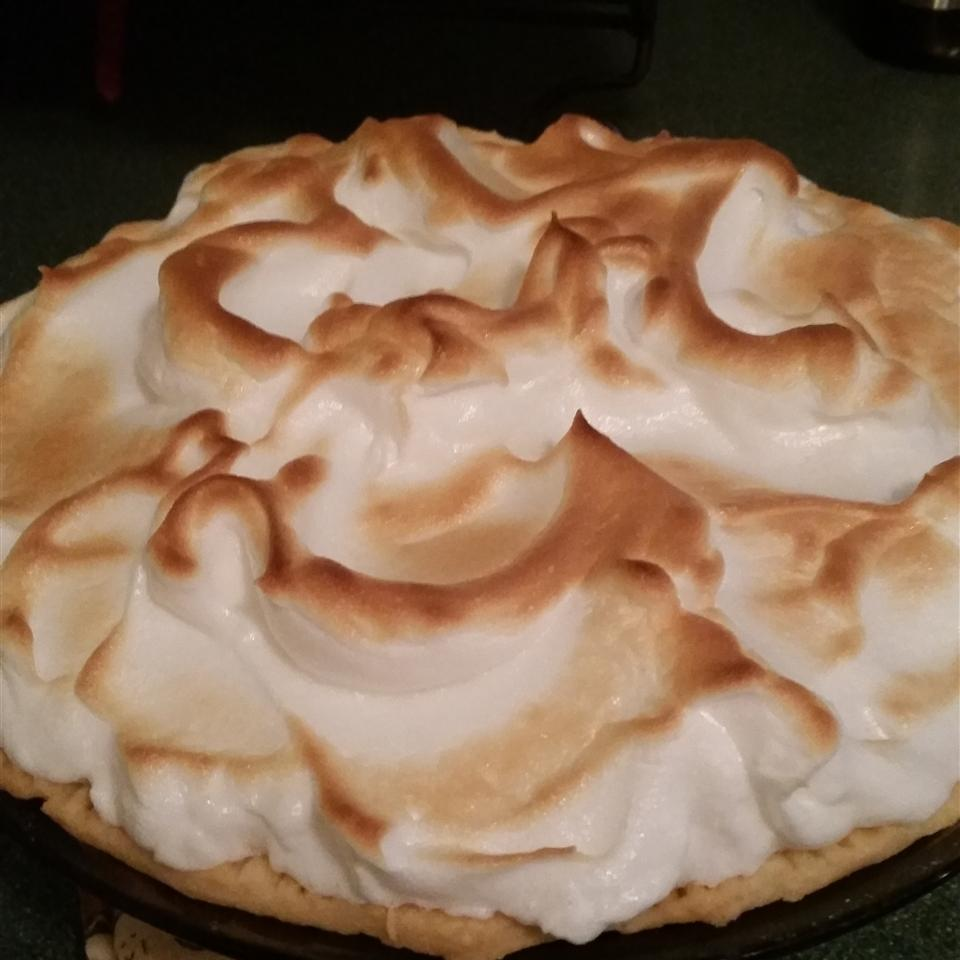
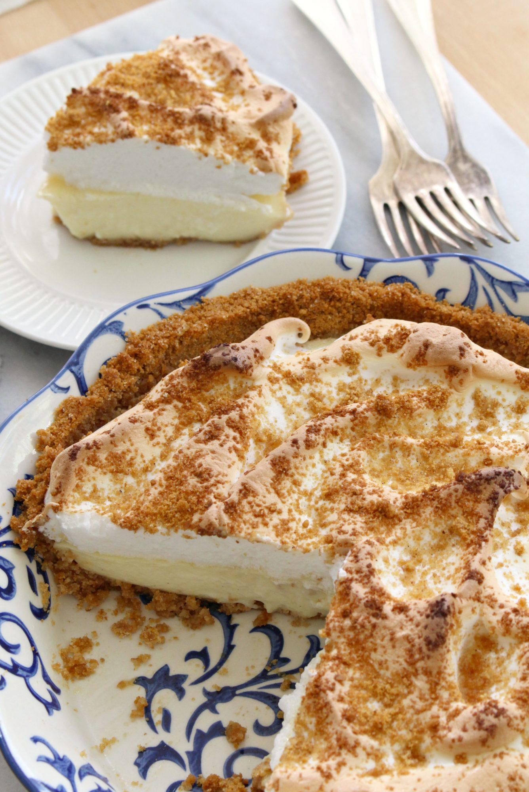

back

Description
Vanilla custard pie with meringue in a cinnamon-graham cracker crust.
Ingredients
Crust
1 ½ cups graham cracker crumbs
½ cup white sugar
½ cup butter, melted
1 tablespoon ground cinnamon
Filling
3 cups milk
½ cup white sugar
¼ cup cornstarch
3 egg yolks
1 teaspoon vanilla extract
Meringue
3 egg whites
2 tablespoons white sugar
Steps
Step 1
- Preheat an oven to 350 degrees F (175 degrees C).
Step 2
- Mix the graham cracker crumbs, 1/2 cup sugar, melted butter and cinnamon in a bowl.
- Reserve 1/4 cup for topping the pie
- Press the remaining crumb mixture in the bottom and up the sides of a 9-inch deep-dish pie plate
- Bake the crust in the preheated oven for 8 minutes.
Step 3
- Heat the milk in a saucepan over medium-high heat.
- In a non-plastic bowl, whisk together the 1/2 cup sugar, cornstarch, egg yolks, and vanilla.
- When the milk is hot but not boiling, slowly pour the milk in a steady stream into the yolk mixture, whisking constantly.
- Return the custard to the saucepan and bring to a boil over medium heat, stirring constantly with a wooden spoon or a heat-proof spatula.
- Cook and stir for 2 to 3 minutes over low heat until the custard has thickened.
- Pour the custard into the graham cracker crust.
Step 4
- Preheat the oven's broiler and set the oven rack about 6 inches from the heat source.
Step 5
- Beat the egg whites until medium peaks form
- add 2 tablespoons of sugar and beat until the meringue is stiff.
- Scoop out the meringue on top of the custard filling.
- Sprinkle the meringue with the reserved graham cracker crumbs.
Step 6
- Place the pie under the broiler and bake until the meringue starts to brown, 3 to 5 minutes.

Return to top